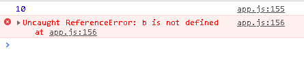

var,let,const
What?
在javascript裡面有到現在(ES6以上)，除了var宣告變數的方式之外，還多出了兩個新的方式—— let與const ，到底傳統的方式與新的方式不同在哪裡?為什麼有var了還要用到let與const呢?它們的差別到底在哪裡?我們先來介紹如何宣告變數吧!!
How?
變數我們可以像下面這個樣子去宣告:
var name = 'joe';
let name = 'john';
const name = 'eric';
以上這三種方法都可行，也都console的出來，我們可能就會想，既然這三種都可以使用，那我們要選擇哪個呢?以目前來說，現在都用let去宣告會比較好，可以規避掉一些問題(比如變量提升，for迴圈用var的問題)，那到底是可以規避掉哪種與哪些問題呢?這我們晚點談，我們先來談談 變數的作用區域!
變數的作用區域
再說之前，我們來解釋一下什麼叫做"區域"，通常我們在程式裡面會很常看到大括弧{}，然後中間夾雜著程式，比如說:
function takename(value){
var name = value || 'Eric';
console.log(name);
}
在這個大括號之間就算是一個"區域"，或著是for迴圈、if判斷這些都算是個區域，了解了區域之後我們來談談用var宣告變數跟不用var(or let,const)宣告差別在哪吧!
我們可以這樣宣告
name = 'Eric';
var newname = 'Joe'
這兩個有什麼差別呢?如果我們直接指定某個名稱的值，該名稱就會自動變成為全域範圍，變成了全域變數，其實也就是在全域物件上建立特性! 這很方便也很危險，因為是在全域物件上建立特性，如果是在瀏覽器上就是windows物件上，所以我們可以使用this來取得，比如說我們可以這樣取得name值:
this.name
還是不太懂嗎?沒關係，讓我們來跟var比較一下就知道了，你可試試看用 "this.newname"看看，是取得不到的，我們再來看個例子
function test(){
var name = 'Eric';
newName = 'Joe';
}
console.log(name);
console.log(newName);
你會發現第一個console會出錯，而第二個就能順利取出，這就是這兩者之間的差別，而我們通常把這兩個分別稱為:
- 全域變數
- 函式變數 (用var宣告)
全域變數就是將全域物件上設定特性，直接將名稱指定一個值，特色就是能夠在任何地方取得到;而用var宣告的為 函式變數，所以用var宣告的變數只能在函式裡面使用嗎?不是喔!不是這樣的，這讓我們來看看下面這個例子:
function test(){
var x = 10;
}
if (true) {
var y = 20;
}
test();
console.log(y);
console.log(x);
看看例子先想想看，最後面的console結果會是如何?
答案是y能夠正常顯示，而取得x時會出錯，這是因為var的在作用域是在整個函式中時(也就是在function中的時候)，此變數只存在function區塊中唷，在function之外的地方是取得不到的，而在 非function中的"if"或是"for迴圈"中，在大括號以外的區域還是取得的到， 簡單說就是在function區塊中宣告的var變數，只存在於function當中，而在非function區塊中的var變數，幾乎在任何地方都能取得到。所以他才會叫做函式變數!!
var與let的差別
直接來看例子:
var a = 3;
var a = 4;
console.log(a);
想想看，上面這個例子會出錯嗎?
在javascript裡面是會通過編譯的喔!如果是在Java裡面絕對行不通的啦!!上面這個例子其實實際上使用的話不是很好，想想看今天我們程式上百上千行，這樣子的宣告方式會很容易出錯，很容易就重複宣告變數，結果程式跑出來的結果不是我們想要的，但是編譯上也沒有出錯，就會很難除臭蟲(Bug)。
但是用let去宣告的話就不可行了，在編譯時就會出錯誤!
let a = 3;
let a = 4;
console.log(a);
變量提升
什麼叫做變量提升，來看看下面這段程式碼
console.log(name);
var name = 'joe';
這樣會編譯出錯嗎?我們都知道電腦讀程式碼的時候，是一行一行往下讀的，那上面這段程式碼就很奇怪啦!明明還沒有宣告name我們就直接拿來用了，所以編譯會出錯吧!很神奇的時在javascript裡面編譯會通過，只是結果通常不是我們要的而已!!
什麼?!編譯會通過也太奇怪了吧!那結果是什麼呢? console出來的結果會是"undefined"，undefined是javascript資料型態的一種，關於這個可以看看 這篇-關於資料型態，看了之後會更清楚這裡再說什麼, "undefined"會出現再我們宣告了變數，卻還沒有給予值的時候，像是這個樣子
var x;
console.log(x);
這時候console出來的就是"undefined"， 在javascript有兩個特殊值，一個是"undefined"，另一個是"null"，日後我們會再說這兩者的差別，回歸正題，那為什麼一開始的那段程式碼，明明我們沒有先宣告就console，但是出來的結果還是"undefined"呢?因為javascript在遇到那種情況，會自動幫我們看成:
var name;
conosle.log(name);
name = 'joe';
所以在console的時候才會得到undefined，而function也會hoisting(變量提升)喔，例如:
test();
function test() {
console.log('Joe');
}
整塊function都會hoisting上去:
function test() {
console.log('Joe');
}
test();
但如果是這樣的:
console.log(function2);
var function2 = function {
console.log('Joe');
}
它就會hoisting成:
var function2;
console.log(function2);
function2 = function {
console.log('Joe');
}
let 與 var 的作用域
let 與 var的作用域不同，上面有提到
- 函式作用域 (function scope) : 僅在function內宣告變數時，function外無法存取變數!
- 區域作用域 (block scope) : 在任何的block內(大括號內)宣告變數，大括號外的世界就無法存取變數!
不要用硬記的，去理解!!
來看個例子:
if(true) {
var a = 10;
let b = 10;
}
console.log(a);
console.log(b);
試試看這段程式碼會有什麼樣的結果?
是的會出錯，而且給的錯誤是" b is not defined"，也就是b還沒有被"定義"的意思，由此可知在這個例子中let宣告的變數只存在if的大括號中，在if的區塊外的無法存取變數
在考考大家下面這兩種情況:
if(true) {
let b = 10;
if(true) {
console.log(b);
}
}
if(true) {
if(true) {
let b = 10;
}
console.log(b);
}
上面的會正常輸出，而下面的也會得到"b is not defined"的結果喔!因為第二種情況的"b"只存在裡面的if區域裡面，所以之外的地方是存取不到的!
好的習慣去寫程式很重要，可以幫助我們規避一些問題，也可以更好的與別人溝通(團隊時可以更容易讓別人看懂程式碼)，也幫助我們更容易去除臭蟲
好習慣
- 先宣告變數，在使用變數